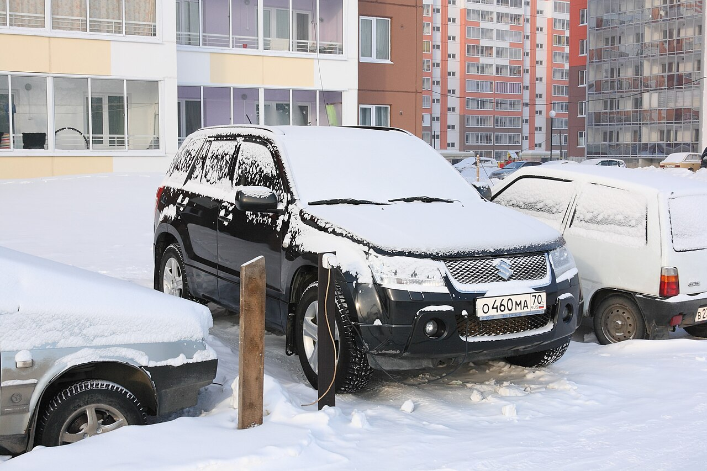

Block Heaters: Do You Need One, and How to Use It Right
A block heater does more for cold mornings than any amount of idling — if you use it right.

Photo: Ilya Plekhanov, CC BY-SA 3.0, via Wikimedia Commons

Your car won't start on a -25°C morning, the battery is fine, the fuel is fine — the problem is the oil, thick as honey, and an engine block cold-soaked overnight. That's the exact problem a block heater solves, and it's the most underused cold-weather tool on most cars. Plenty of cars in Canada already have one fitted and the owner doesn't know it. And the owners who do know often use it wrong.
Why it's wrong
The common mistakes go both ways. Leaving a block heater plugged in all night, every night, wastes electricity for hours after the engine is already as warm as it's going to get — the heater reaches its useful temperature in a couple of hours, and the rest is just heating the night air. The other mistake is not using one at all in deep cold: a cold-soaked engine needs far more cranking power, puts maximum strain on the battery and starter, and takes much longer to produce cabin heat. In genuinely cold climates, skipping the block heater on the coldest nights is asking for a no-start morning. And a damaged heater cord — cracked insulation, a corroded plug — is a fire risk that too many people ignore.
The right way
- Check if you already have one. Look for a power cord tucked near the grille or in the engine bay, usually with a three-prong plug. Many cars sold in Canada come with a block heater fitted from the factory. If you don't have one, a shop can install one — check your owner's manual or ask your mechanic what fits your car.
- Plug in when it drops below about -15°C. Above that, most cars start fine without it. Below it, the heater earns its keep.
- Use a timer: two to three hours before you leave is enough. Set the timer for the early morning hours. The engine will be warm when you need it, and you're not paying to heat it all night.
- Use a proper outdoor extension cord. A heavy-duty outdoor-rated cord, as short as practical, plugged into a ground-fault (GFCI) outlet. Check the cord and plug each fall for cracks or corrosion.
- Unplug before you drive away. It sounds obvious until the day you forget and rip the cord out of the bumper. Coil the cord neatly and tuck the plug where it won't drag.
- Combine it with a battery in good shape. A block heater helps the engine turn over, but a weak battery is still a weak battery. Test the battery in October.
The rundown
Check if you have one, plug in below -15°C, timer for two to three hours before you leave, and inspect the cord every fall. A block heater won't fix a dead battery, but for a healthy car on a brutal morning, it's the difference between starting first try and not starting at all.
← Back to the battery care guide
Watch: Block Heater 101
🌡️ Check tomorrow morning FREE TOOL
Wondering whether to plug in tonight? Will My Car Start Tomorrow? checks the overnight low and tells you your cold-start risk.